Programación Lógica
Índice de contenido:
- Filosofía del paradigma
- ¿Qué es?
- Lógica Proposicional
- Resolución SLD
- Backtracking
- Problema de las N reinas
- Ventajas y desventajas
- Lenguajes
- Aplicaciones
Filosofia del paradigma
La mayoría de los lenguajes de programación se basan en la teoría lógica de primer orden, aunque también incorporan algunos comportamientos de orden superior, en este sentido, destacan los lenguajes funcionales ya que se basan en el Calculo Lambda, es la única teoría lógica de orden superior.
"Modelar problemas por medio de la abstracción, utilizando un sistema de lógica formal que permite llegar
a una conclusión por medio de hechos y reglas"
"Aplicación de reglas de la lógica para inferir conclusiones a partir de datos."
¿Qué es?
Paradigma de programación basado en la lógica de primer orden. La programación lógica estudia el uso de la lógica para el planteamiento de problemas y el control sobre las reglas de inferencia para alcanzar la solución automática.
La programación lógica, junto con la funcional, forma parte de lo que se conoce como Programación Declarativa, es decir la programación consiste en indicar como resolver un problema mediante sentencias, en la Programación Lógica, se trabaja en una forma descriptiva, estableciendo relaciones entre entidades, indicando no como, sino que hacer, entonces se dice que la idea esencial de la programación lógica es
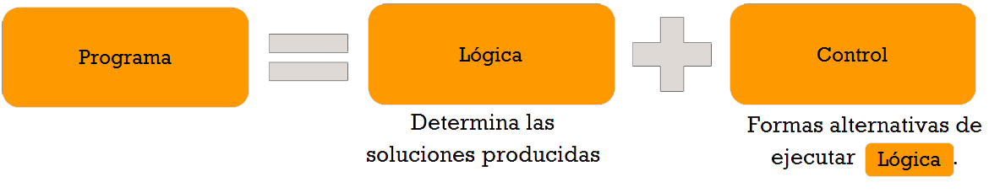
Se puede ver como una deducción controlada.
Lógica (programador): hechos y reglas para representar conocimiento.
Control (interprete): deducción lógica para dar respuestas (soluciones).
¿Qué trata de resolver?
Dado un problema S, saber si la afirmación A es solución o no del problema o en que casos lo es. Además queremos que los métodos sean implantados en maquinas de forma que la resolución del problema se haga de forma automática
La programación lógica construye base de conocimientos mediante reglas y hechos.
Características del Paradigma
Lógica Proposicional
También llamada lógica de enunciados: toma como elemento básico las frases declarativas simples o proposiciones. Su estructura está dada por:

Es un sistema formal cuyos elementos más simples representan proposiciones, y cuyas constantes lógicas, llamadas conectivas lógicas, representan operaciones sobre proposiciones, capaces de formar otras proposiciones de mayor complejidad.
La lógica proposicional trata con sistemas lógicos que carecen de cuantificadores, o variables interpretables como entidades. En lógica proposicional si bien no hay signos para variables de tipo entidad, sí existen signos para variables proposicionales (es decir, que pueden ser interpretadas como proposiciones con un valor de verdad definido), de ahí el nombre proposicional. La lógica proposicional incluye además de variables interpretables como proposiciones simples signos para conectivas lógicas, por lo que dentro de este tipo de lógica puede analizarse la inferencia lógica de proposiciones a partir de proposiciones, pero sin tener en cuenta la estructura interna de las proposiciones más simples.
Proposiciones: Elementos de una frase que constituyen por sí solos una unidad de comunicación de conocimientos y pueden ser considerados verdaderos o falsos.
Proposición Simple: “Pepito es humano”.
Proposición Compuesta: “Pepito es hombre y pepita es mujer”.

Lógica de primer orden
También llamada lógica de predicados: es un sistema deductivo basado en un lenguaje lógico matemático formal. Su estructura esta dada por:
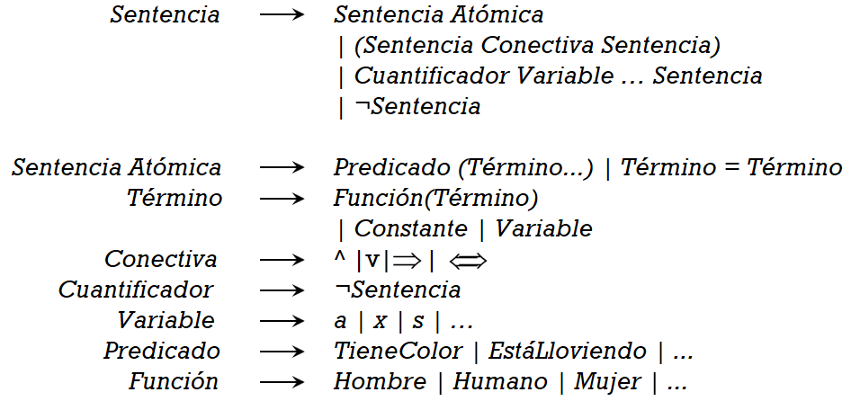
Incluye proposiciones lógicas, predicados y cuantificadores.
Más expresiva de la Lógica proposicional.
- ¿Qué se afirma? (predicado o relación)
- ¿De quién se afirma? (objeto)
Es un sistema formal diseñado para estudiar la inferencia en los lenguajes de primer orden.1 Los lenguajes de primer orden son, a su vez, lenguajes formales con cuantificadores que alcanzan sólo a variables de individuo, y con predicados y funciones cuyos argumentos son sólo constantes o variables de individuo. La lógica de primer orden tiene el poder expresivo suficiente para definir a prácticamente todas las matemáticas.
Cláusulas de Horn
Secuencia de literales que contiene a lo sumo uno de sus literales positivos (disyunción de literales). Esto es un ejemplo de una cláusula de Horn, y abajo se indica una fórmula como esta también puede reescribirse de forma equivalente como una implicación:
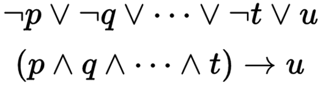
- Cláusula ‘definite’: Cláusula de Horn con exactamente un literal positivo.
- Hecho: Cláusula ‘definite’ sin literales negativos.
- Cláusula objetivo: Sin ningún literal positivo (consulta).
En Prolog Se escribe primero el consecuente luego el antecedente.
Ej: Estructura de clúasulas de Horn: 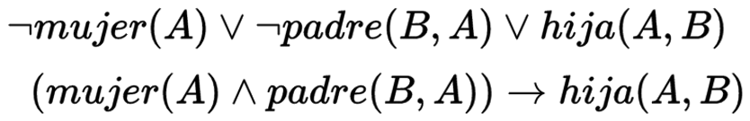 Estructura de clásulas de Horn en Prolog: 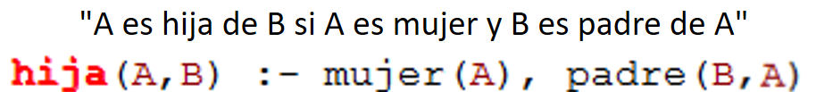
Resolución SLD (Selective Linear Definite clause resolution)
El nombre "SLD resolution" fue dado por Maarten van Emden para la regla de inferencia sin nombre introducida por Robert Kowalski. Su nombre deriva de la resolución de SL, que es a la vez sonido y refutación completa de la forma clausal sin restricciones de la lógica. "SLD" significa "SL resolution with Definite clauses".
En ambos, SL y SLD, "L" representa el hecho de que una prueba de resolución se puede restringir a una secuencia lineal de cláusulas:
$$C_{1}, C_ {2}, \cdots, C_{l}$$Donde la "cláusula superior" \(C_ {1}\), es una cláusula de entrada, y cada otra cláusula \(C_{i + 1} \) es una solución de cuyos padres es la cláusula anterior \(C_ {i} \). La prueba es una refutación si la última cláusula \(C_{l} \), es la cláusula vacía.
En SLD, todas las cláusulas son una secuencia cláusulas objetivo y el otro padre es una cláusula de entrada. En la resolución SL, el otro padre es una cláusula de entrada o una cláusula ancestral anterior en la secuencia.
Tanto en SL como en SLD, "S" representa el único literal resuelto en cualquier cláusula \(C_ {i} \), es aquel que es seleccionado únicamente por una regla de selección o función de selección. En la resolución SL, el literal seleccionado está restringido a uno que ha sido introducido recientemente en la cláusula. En el caso más simple, tal función de selección de último en entrar primero en salir puede especificarse por el orden en el que se escriben los literales, como en Prolog. Sin embargo, la función de selección en la resolución SLD es más general que en la resolución SL y en Prolog. No hay ninguna restricción sobre el literal que se puede seleccionar.
Backtracking
En lenguajes de programación como Fortran, Pascal, C o Java, las instrucciones se ejecutan normalmente en orden secuencial, es decir, una a continuación de otra, en el mismo orden en que están escritas, que sólo varía cuando se alcanza una instrucción de control (un bucle, una instrucción condicional o una transferencia).
Los programas en Prolog se componen de cláusulas de Horn que constituyen reglas del tipo "modus ponendo ponens", es decir, "Si es verdad el antecedente, entonces es verdad el consecuente". No obstante, la forma de escribir las cláusulas de Horn es al contrario de lo habitual. Primero se escribe el consecuente y luego el antecedente. El antecedente puede ser una conjunción de condiciones que se denomina secuencia de objetivos. Cada objetivo se separa con una coma y puede considerarse similar a una instrucción o llamada a procedimiento de los lenguajes imperativos. En Prolog no existen instrucciones de control. Su ejecución se basa en dos conceptos: la unificación y el backtracking.
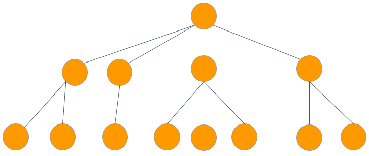Gracias a la unificación, cada objetivo determina un subconjunto de cláusulas susceptibles de ser ejecutadas. Cada una de ellas se denomina punto de elección. Prolog selecciona el primer punto de elección y sigue ejecutando el programa hasta determinar si el objetivo es verdadero o falso.
En caso de ser falso entra en juego el backtracking, que consiste en deshacer todo lo ejecutado situando el programa en el mismo estado en el que estaba justo antes de llegar al punto de elección. Entonces se toma el siguiente punto de elección que estaba pendiente y se repite de nuevo el proceso. Todos los objetivos terminan su ejecución bien en éxito ("verdadero"), bien en fracaso ( "falso").
A continuación veremos un ejemplo de backtracking en caso de que todos los objetivos son falsos.


Selecciona el primer punto de elección.


Si encuentra un objetivo falso realiza backtracking hasta el punto de elección anterior, y continua.

Repite el mismo procedimiento y en caso de no encontrar objetivo verdadero, y no tener más puntos de elección que recorrer devuelve falso como resultado de la consulta.
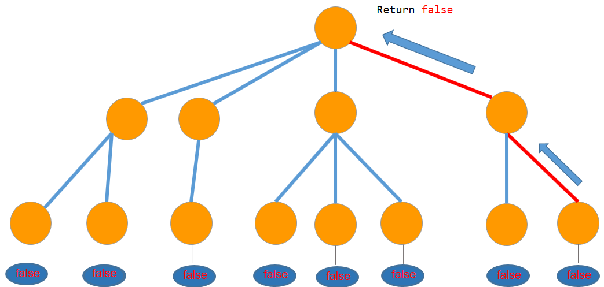
En caso de que todos alguno de los objetivos sea verdadero este es el recorrido.
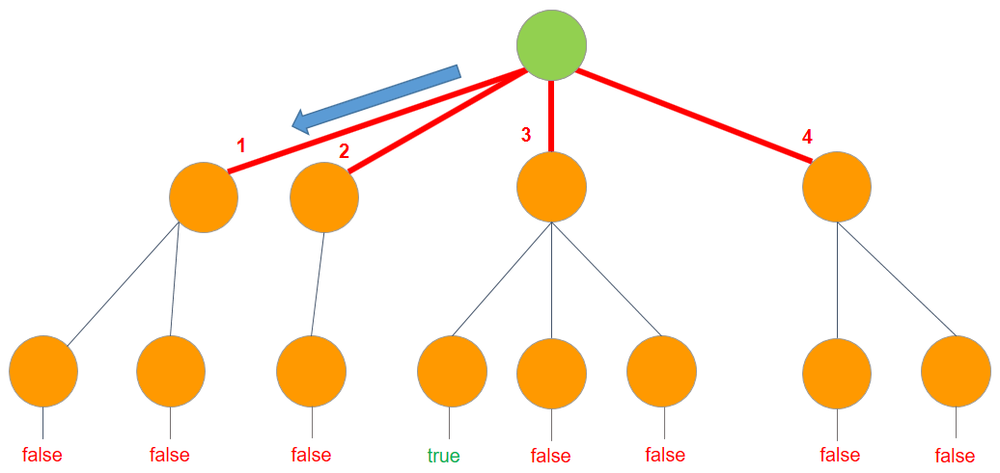


El problema de las N reinas: (Backtracking)
El problema consiste en un tablero de ajedrez que tiene NxN celdas, necesitamos colocar N reinas de tal manera que ninguna reina ataque a otra reina. Una reina puede atacar horizontalmente, verticalmente y diagonalmente.

Inicialmente tenemos NxN celdas sin ataques donde necesitamos colocar N reinas. Colocamos la primera reina en una celda (i, j), de modo que ahora el número de celdas no atacadas se reduzca, y la cantidad de reinas que se ubicarán es N-1. Colocamos la próxima reina en alguna celda no atacada. De nuevo, esto reduce el número de celdas sin ataque, y el número de reinas que se colocarán se convierte en N-2. Continuamos haciendo esto, siempre y cuando se cumplan las siguientes condiciones:

Finalmente, si el número de reinas que se colocan se convierte en 0, entonces se terminó, encontramos una solución. Pero si el número de celdas desatendidas se convierte en 0, entonces debemos retroceder, es decir, eliminar la última reina colocada de su celda actual, y colocarla en alguna otra celda. Hacemos esto recursivamente.

Conceptos clave del paradigma
Hechos
Expresión atómica (declaración, cláusula o proposición) que se formula de la forma \(P(t_{1}, ..., t_{n})\), indicando que se verifica el predicado P sobre los objetos \(t_{1}, ..., t_{n}\).
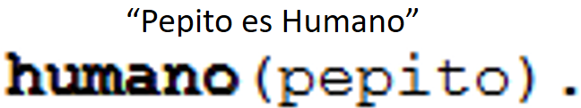
Sobre estas expresiones se puede definir el concepto de aridad como la cantidad de objetos presentes en su declaración, a partir de este concepto se pueden clasificar los hechos como:
- Enunciado: Aridad = 0. Ejm: Verdadero.
- Propiead: Aridad = 1. Ejm: humano(Pepito), animal(Perro).
- Relación: Aridad > 1. Ejm: padre(Homero, Bart), aprobar(Juan, Lenguajes de Programación).
Los hechos son utilizados para declarar verdades desde el principio de la ejecucción de un programa, y el conjunto de estos hechos se denomina como base de conocimientos.
Reglas
Conjunto de proposiciones lógicas escritas como clausulas de Horn que permiten inferir el valor de verdad de nuevas proposiciones, permitiendo ampliar la base de conocimientos, a la vez que son utilizadas para definir el dominio del problema.
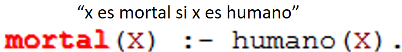
Consultas
Proposición construida con el propósito de ser demostrada/desmentida o de encontrar el conjunto de valores que la convierten verdadera. En las consultas se especifica el problema a resolver. Partiendo deque los humanos son mortales y de que Pepito es humano (ejemplos anteriores), deducimos que Pepito es mortal.
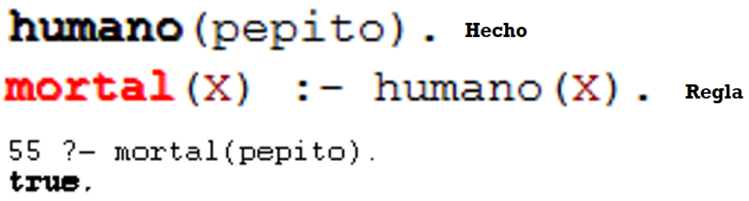
Recursión
La recursividad puede ser tratada de una manera más eficaz si se piensa en que hace el algoritmo recursivo que se piensa aplicar, en vez de cómo hacerlo. Para esto se usará la modularidad, la cual se basa en separar el problema en otros más pequeños y hallar la solución a estos para luego unirlos, como es ususal en la programación lógica.
Lo que se ha estado mostrando hasta ahora es, este sistema de resolver problemas de la programación lógica mediante la modularidad, entonces, ¿cómo puede ser aplicada ésta en la recursión?
Si nuestro problema es obtener el área de un cuadrado, lo que se debe hacer no es separar esta área en una de un triángulo o un círculo, sino en las áreas de otros cuadrados, por lo cual se puede dar el valor del área del cuadrado con las medidas mínimas y de ahí empezar a llamar recursivamente la función con medidas mayores a ésta. Por ejemplo:
El área de un cuadrado de área de 2 unidades cuadradas es igual a cuatro veces el área de un cuadrado de 1 unidad cuadrada.
De esta manera se pueden obtener resultados de un problema con solo definir los casos base y de ahí realizar las operaciones recursivamente.
En un ámbito más matemático ésta idea puede ser utilizada para resolver operaciones sencillas como es el caso de las sumatorias o factoriales, en general cualquier operación que requiera información del resultado que generan valores inferiores al dado. Un ejemplo de ésto podría ser el hallar las potencias de dos dado el exponente en la función, lo cual puede ser hallado con el siguiente programa de Prolog.
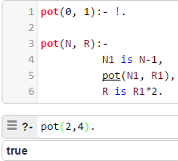
Ejemplo:
Un conjunto de hechos constituye un programa (la forma más simple de programa lógico) que puede ser visto
como una base de datos que describe una situación. Por ejemplo, el Programa 1 refleja la base de
datos de las relaciones familiares que se muestran en el siguiente gráfico.


Todos los hechos de este programa son hechos de base (sin variables), pero también se pueden introducir hechos con variables como axiomas,por ejemplo: \(suma(0, X, X)\). En ellos, las variables se consideran cuantificadas universalmente. Es decir, ∀\(x\) \(suma(0, x, x)\).
Al igual que el hecho es_mujer(sarah) establece la verdad de la sentencia "Sarah es mujer", el hecho \(suma(0, X, X)\) establece la verdad para cualquier valor que pueda tomar la variable, es decir, nos dice que "para todo término x, la suma de 0 con x es x" . Equivale a un conjunto de hechos de base como serían: \(suma(0, 1, 1)\), \(suma(0, 2, 2)\), etc.
Una vez que se tiene el programa describiendo una situación, se pueden hacer consultas para obtener información acerca de él. Por ejemplo, podemos hacer consultas al Programa 1 del tipo siguiente:

Ventajas y Desventajas del uso de este paradigma
Ventajas
Desventajas
Aplicaciones:
- Desarrollo de aplicaciones de inteligencia artificial.
- Prueba de teoremas de forma automática, donde un programa genera nuevos teoremas sobre una teoría existente.
- Construcción de Sistemas expertos, donde un Sistema de información mita las recomendaciones de un experto sobre algún dominio de conocimiento.
- Procesamiento del lenguaje natural, donde un programa es capaz de comprender (con limitaciones) la información contenida en una expresión lingüística humana. A continuación se presenta un ejemplo simple de procesamiento de lenguaje natural.
- Consultas lógicas basadas en reglas como:
- Búsquedas en bases de datos.
- Sistemas de control de voz.